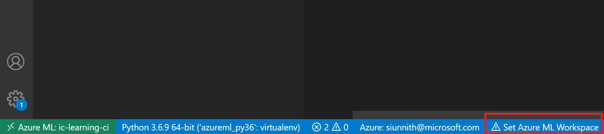
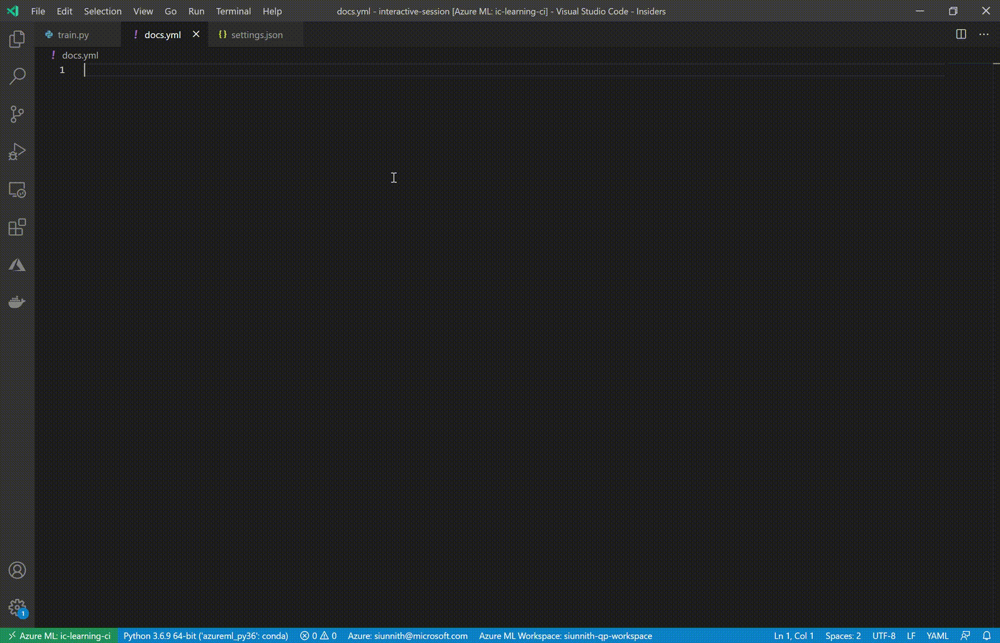

Tooling Setup¶
VS Code¶
Use VS Code and the Azure Machine Learning (AzML) extension for an enhanced editing experience as you work through the concepts in these docs.
Azure ML Extension¶
Install the latest version of the Azure ML extension from here, or through the extension marketplace in VS Code:

If you’re not signed-in to your Azure account, please follow the prompts to do so. If you already have the extension installed, ensure that you’re using the latest version (0.6.21) which includes the AzML language support.
Once the extension is installed, use the command “Azure ML: Set Default Workspace” or click on the “Set Azure ML Workspace” option in the status bar.
Follow the prompts and choose your subscription and workspace. The bottom status bar will be automatically updated once you’ve confirmed your selection.
$schema Property¶
To get started with the language support, you can create a new empty YAML file in VS Code. The first step to get completions is to set a schema in the file.
You can achieve this by inputting the property $schema at the top of the file and invoking completions through one of:
1. Inputting Ctrl + Space.
2. Starting typing the name of the resource you wish to author (e.g. Command Job, Batch Deployment).
The Azure ML extension will surface a list of resources for which a public schema is available. You no longer have to search for the correct schema URL or manually change VS Code settings to enable language server support.
With an automatically populated schema URL, you can start invoking basic schema completions in the file.
Resource Completions¶
As you begin to author configuration files as listed in this documentation, you will have the opportunity to specify Azure ML resources in your workspace through the azureml: moniker.
Given that you have a default workspace set through the extension, you can invoke completions for resources through one of: 1. Starting to type the name of the resource. 2. Inputting Ctrl + Space following the property tag.
The extension does its best to provide you with additional information to help make a selection when you’re providing a value for a property. For example, when inputting a compute target the extension will surface both AmlCompute and ComputeInstance resources with subtext in the completion list to help you differentiate.
For versioned resources (e.g., dataset or environment) only the latest version is shown. In the future, the extension aims to surface resource details for all the versions associated with a resource.

Resource Diagnostics¶
Another benefit of using the extension when authoring configuration files is validation not only based on the reference schema (e.g., is the property I’ve added valid for the resource I’m trying to create), but also validation for any resources that you input through the azureml: moniker.
The extension will cross-reference all values with resources in your default workspace. If the extension detects an incorrectly specified resource, an inline error will be shown.
Quick-fixes and suggestions are part of the future work for diagnostics.